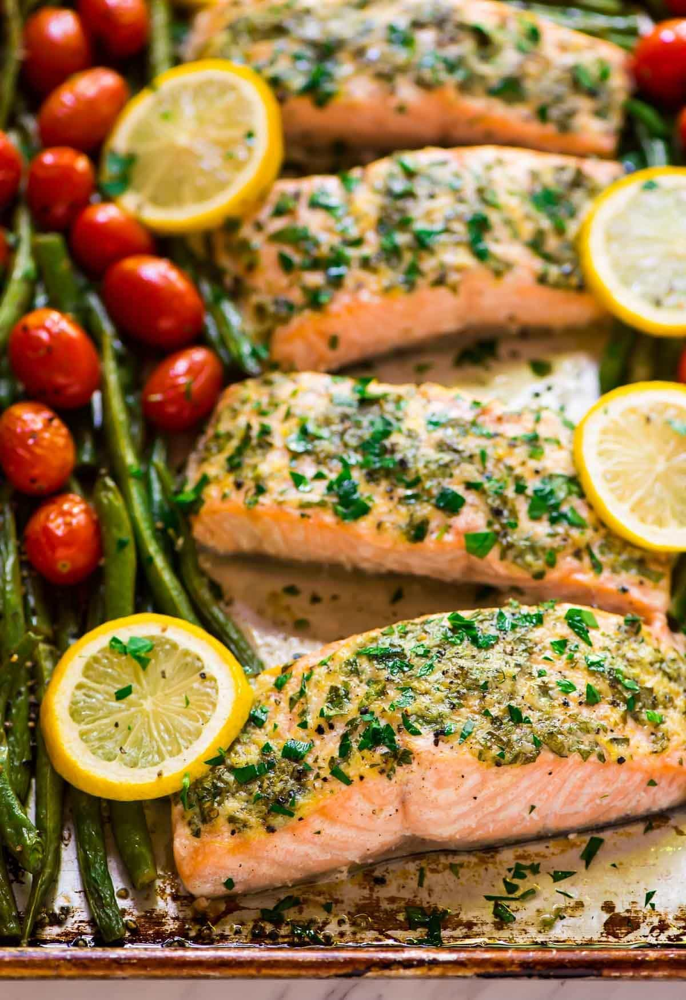

Garlic Salmon

Description
This healthy salmon recipe doesn't require too much prep and bakes on a single sheet pan. One-pan meals really
can brighten your day!
It can be the perfect meal to enjoy with a glass of wine after a long day, but with no extra effort required.
It's healthy, yet satisfying thanks to
nutritious salmon paired with rich and flavorful compound butter.
Ingredients
- Salmon. Rich in nutrients, such as Omega 3 fatty acids and protein.
- Garlic + Butter. A dynamic duo of flavor. It will keep the salmon perfectly moist, ultra flaky and packed with flavor.
- Parsley. An herb that provides a taste of freshness and color to the salmon dish.
- Lemons. Pairs quite nicely with the salmon and adds a touch of brightness onto the dish.
- Green Beans. An easy way to sneak some veggies onto the plate. They provide a tender, yet crisp addition to this dish.
- Tomatoes. For contrasting color, added moisture and classic tomato flavor.
Steps
- Preheat the oven to 400 degrees F and arrange the salmon fillets on a large rimmed baking sheet coated with nonstick spray.
- Mash together softened butter, garlic, lemon zest, parsley, black pepper, then rub the compund butter onto the salmon fillets.
- Toss the green beans and tomatoes together with olive oil, salt, and black pepper then arrange them around the salmon. Drizzle everything with lemon juice and top with additional slices of lemon.
- Bake salmon at 400 degrees F for 15 to 20 minutes, until it reaches an internal temperature of 135 to 140 degrees F. Remove, let rest a few minutes, and garnish with additional parsley, salt, and pepper to taste. Bon appetite!